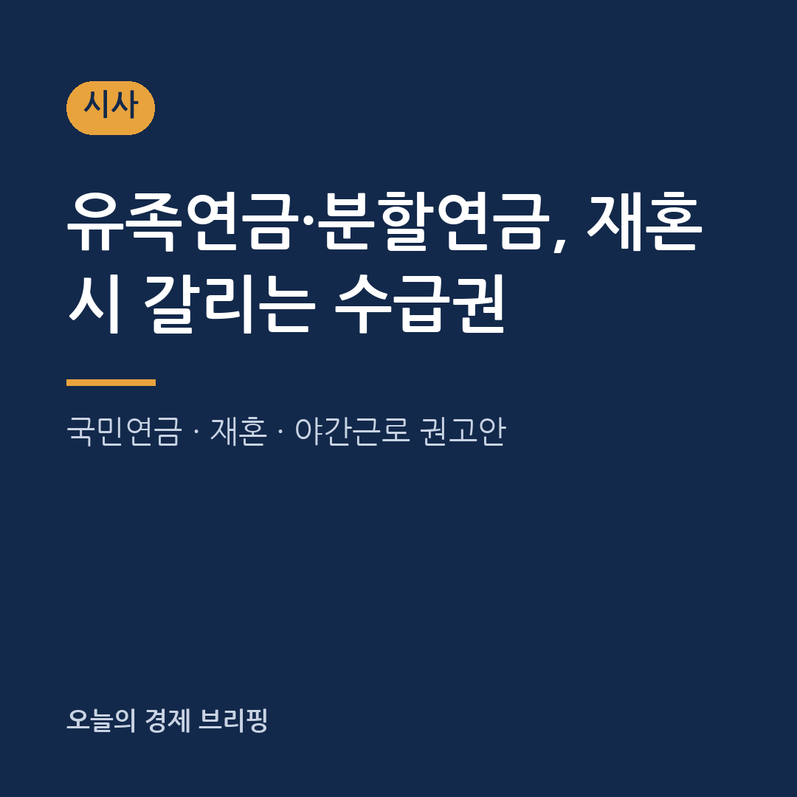
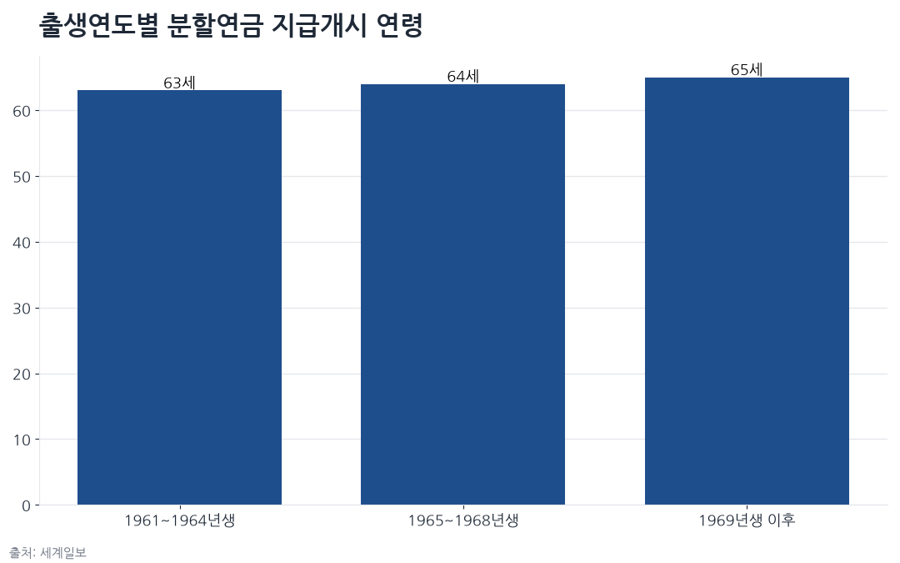

2026-11-28-1134-tistory 발행 키트 · 이 페이지는 검색에 노출되지 않습니다.
제목
카테고리
시사태그
본문 (그림·표 포함)
휴대폰 블로그 앱에서는 그림이 같이 붙지 않을 수 있어요. 그때는 [글자만 복사] 후 아래 이미지를 저장해 [그래프1]·[표1] 자리에 첨부하세요.

핵심 결론부터 말씀드립니다. 배우자와 사별한 뒤 재혼하면 국민연금 유족연금의 수급권은 소멸하지만, 이혼으로 받게 된 분할연금은 재혼 후에도 유지됩니다. 한편 고용노동부는 연속 야간근무를 3일 이하로 관리하는 권고안을 곧 내놓을 예정입니다.
▶ 배경: 같은 국민연금, 다른 지급 구조
국민연금에는 가입자 본인이 받는 노령연금 외에, 가족 관계의 변화에 따라 생기는 연금이 있습니다. 유족연금은 가입자나 수급자가 사망했을 때 남은 배우자 등 유족에게 지급되는 연금입니다. 분할연금은 이혼한 배우자가 받는 노령연금 가운데 혼인기간에 해당하는 몫을 나누어 받는 연금입니다.
사별과 이혼이라는 출발점이 다르기 때문에 재혼, 본인 연금 수급 같은 이후 상황에서 처리 방식도 갈립니다.
▶ 핵심 내용 1: 재혼과 중복 수급
두 연금을 항목별로 비교하면 다음과 같습니다.
유족연금·분할연금 항목별 비교
| 항목 | 유족연금 | 분할연금 |
|---|---|---|
| 지급 사유 | 배우자 사망 | 이혼(혼인기간 5년 이상) |
| 재혼 시 | 수급권 소멸, 사실혼도 해당 가능 | 소멸하지 않음 |
| 본인 노령연금 발생 시 | 중복 조정으로 하나 선택(본인 연금 선택 시 30% 추가) | 합산 지급 |
| 분할 비율 | 해당 없음 | 혼인기간 해당 연금액의 50% |
출처: 세계일보
유족연금은 재혼하면 수급권 자체가 없어집니다. 혼인신고를 하지 않은 사실혼 관계도 재혼으로 판단될 수 있다는 점에 유의해야 합니다.
분할연금은 재혼해도 소멸하지 않습니다. 단, 이혼했던 전 배우자와 다시 혼인했다면 수급자가 원할 경우 포기를 신청할 수 있습니다.
본인의 노령연금이 발생한 경우도 다릅니다. 분할연금은 본인 연금에 합산되어 지급됩니다. 유족연금은 중복급여 조정에 따라 둘 중 하나만 택해야 하며, 본인 연금을 택하면 유족연금액의 30%가 더해집니다.
▶ 핵심 내용 2: 분할연금 수급 요건
분할연금을 받으려면 네 가지 조건이 필요합니다. 혼인기간 5년 이상, 이혼 상태, 전 배우자의 노령연금 수급권, 그리고 본인의 지급개시 연령 도달입니다.
지급개시 연령은 출생연도별로 다음과 같이 정해져 있습니다.

분할 금액은 원칙적으로 혼인기간에 해당하는 연금액의 50%입니다. 2016년 12월 30일 이후 지급 사유가 생긴 경우에는 협의나 재판을 통해 비율을 바꿀 수 있습니다.
▶ 영향: 재혼 시점과 연금 설계
유족연금 수급자는 재혼이나 사실혼 여부에 따라 연금 수입이 끊길 수 있으므로, 생활 설계 단계에서 이 점을 반영해야 합니다. 분할연금 수급자는 재혼의 영향을 받지 않지만, 본인 노령연금과 합산되는 구조를 이해해 두면 노후 소득을 가늠하기 쉽습니다.
▶ 함께 보는 이슈: 야간근로 권고안
고용노동부가 마련 중인 야간근로 권고안은 보도 시점 기준으로 아직 공식 발표 전입니다. 알려진 내용은 다음과 같습니다.
야간근로 권고안 알려진 내용
| 항목 | 내용 |
|---|---|
| 연속 야간근무 | 3일 이하로 관리 |
| 초심야시간대 | 자정~오전 4시 별도 관리 |
| 적용 대상 | 근로기준법·산업안전보건법 적용 사업장, 새벽배송 제외 |
| 법적 구속력 | 권고안, 강제 없음 |
| 발표 시점 | 고용노동부가 조만간 발표 예정 |
출처: 세계일보
야간시간(밤 10시부터 오전 6시) 가운데 자정부터 오전 4시까지를 초심야시간대로 따로 정해 관리한다는 구상입니다. 적용 대상은 근로기준법과 산업안전보건법을 적용받는 사업장이며, 제조업·병원·경비 등 야간 작업이 있는 곳이 주로 거론됩니다. 생활물류서비스산업발전법의 적용을 받는 새벽배송은 제외됩니다.
권고안이므로 법적 강제력은 없습니다. 야간근무 후 연속 휴식 보장, 건강상 이유로 주간근무 전환을 요청한 근로자에 대한 불이익 금지도 담길 예정입니다.
▶ 확인할 점
첫째, 연금은 개인별 혼인기간과 출생연도에 따라 결과가 달라지므로 국민연금공단 상담으로 수급 가능 여부를 확인해야 합니다. 둘째, 야간근로 권고안은 정식 발표 때 세부 내용이 바뀔 수 있으므로 고용노동부 발표문을 다시 확인하시기 바랍니다.
▶ 정리
1. 유족연금은 재혼(사실혼 포함 가능) 시 수급권이 소멸하고, 분할연금은 재혼해도 유지됩니다.
2. 본인 노령연금이 생기면 분할연금은 합산, 유족연금은 둘 중 하나 선택입니다.
3. 야간근로 권고안은 연속 3일 이하 관리와 자정~오전 4시 별도 관리가 골자이며 법적 강제는 없습니다.
이미지 (개별 복사·저장)
출처 (본문 맨 아래에 붙여넣기 권장)
- 세계일보, 재혼하면 끊기는 유족연금, 이혼 뒤 분할연금은 그대로…국민연금은?, https://www.segye.com/newsView/20261128503192 - 세계일보, 정부, '연속 야간근로 3일 이하 제한' 추진…초심야 별도 관리, https://www.segye.com/newsView/20261127513505